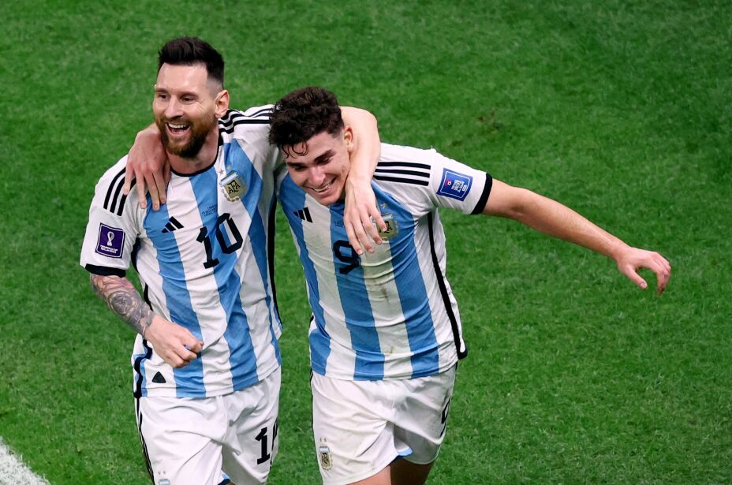
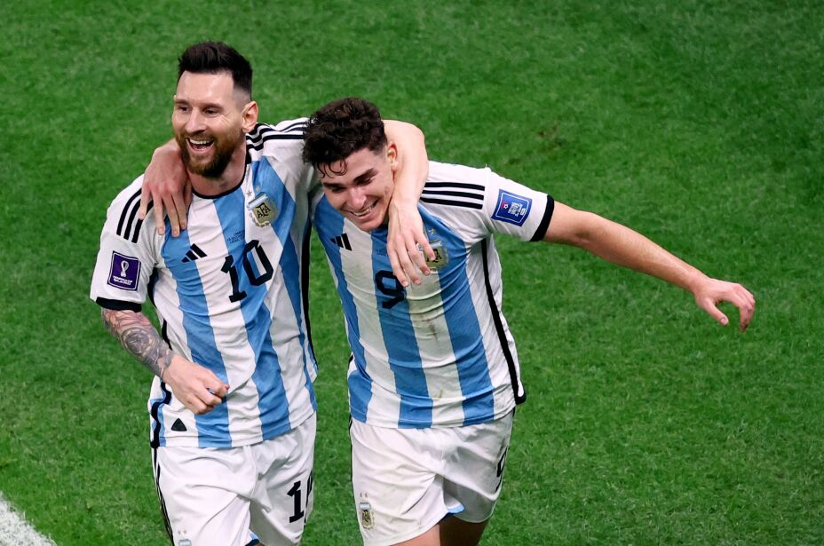

El primer paso en el mundial... Siempre un estrecho en el camino del seleccionado argentino. Esta vez parecía que podíamos tener un comienzo menos convulsivo. Enfrente un rival de menor calibre, un equipo inferior técnica y funcionalmente. Ó al menos eso creímos, porque cuando uno gana confianza queda muy cerca de la subestimación al rival, pero como un mero acto de irresponsabilidad y no de irrespeto hacia los contrarios. Teníamos a cuestas el récord de invicto, y no lo teníamos como espalda de garantía, más bien como mochila.
Durante todo el encuentro Argentina se sintió incómodo con el planteo saudí, a pesar de encontrar el gol (y sumarle relajación a esa incomodidad).
Arabia Saudita con un gran despliegue físico y táctico le cedió la pelota a Argentina (conociéndose que tampoco la iba a poder conservar) y apostó en hacer daño con velocidad, vértigo y explosión. Los sauditas emularon la revolución de la primavera árabe en su ataque y con esos golpes dejaron en shock al equipo argentino. No quedaba otra que despertar.
Como esa llave secreta, especial y única que está hecha para abrir aquella puerta que guarda las riquezas más grandes, de esa forma se manifestó nuestro capitán.
Fue un partido cerrado, sin espacios, contra un rival que después de varias veces tenía la chance de tener una venganza deportiva sobre Argentina.
Nuestra selección demanda tanto respeto que aún luego de una fuerte caída como lo fue con Arabia, México salió solo a defenderse, a cuidar no ser dañado, a no perder. Pero los resultados positivos generalmente son para quienes los buscan, son para aquellos que no se conforman con poco, arriesgan y van, y van, y van.
Había transcurrido la mayor parte del partido cuando nuestro Ángel vió un lugar por dónde darle la pelota a nuestro capitán, que tenía el tiempo necesario (muy poco pero suficiente) para acomodar la pelota y sacar un zurdazo que a medida que se acercaba al arco se alejaba de las intenciones del Memo de evitar lo inevitable: el gol argentino.
Luego de ese momento llegó la hora de jugar con la desesperación de México, mostrarle la pelotita y hacerlo correr. En medio de ese dominio vino el segundo. Un golazo de un joven que le cambió la cara a Argentina, demostrando junto a Mcallister y Álvarez que hay poder de fuego en el futuro del seleccionado.
Muchas veces hay señales que te indican si el rival se siente inferior a vos. Como muchas otras veces te demuestra lo contrario para competirte de igual a igual, aún sabiéndose en desventaja. Polonia dió toda la sintomatología de que se sometía a lo que Argentina propusiera. Plantó sus 11 jugadores en su propio campo y le cedió el control del balón al equipo albiceleste. El seleccionado argentino buscó intensamente ante una ordenada defensa polaca. En los pies de Messi estuvo la oportunidad de abrir el partido mediante un penal, pero Szczęsny se lo negó. Los polacos se jugaban la clasificación apostando a no perder y a que los acompañara el resultado de Arabia Saudita vs México. Argentina también se jugaba la clasificación, pero estaba tan decidida en buscar el triunfo que el nuevo objetivo era ser líder de grupo, dando por hecho que al no sufrir ataques polacos todo se decantaba en cuando iba a llegar el gol.
El partido finalmente se abre comenzando el segundo tiempo, en los pies de una de las jóvenes sorpresas: Alexis McAllister. El resultado final fué 2-0, obra de una combinación entre Enzo Fernández y Julián Álvarez (más promesas Jóvenes). Para terminar, un breve paseo de Messi a Lewandoski, dejando en evidencia que el polaco nunca estuvo a la altura de competirle a semejante bestia mundial. No sólo se evidenció la diferencia de entre un jugador de élite y una leyenda mundial, sino que también Robert se dió cuenta que nunca se tendría que haber aprovechado de la cortesía de Leonel cuando declaro post Balón de Oro. Volviendo al mundial... palo y a la bolsa, chau Polonia! En octavos otra vez.
Voy a ser redundante. Equipo a la extrema defensiva, proponiendo un juego físico, cortando la circulación de juego. Mas redundancia aún, genialidad y gol de Messi. No tengo otra opción que seguir siendo redundante... Presión asfixiante de De Paul y Álvarez, error de arquero y gol del Spiderman cordobés.
Como históricamente pasó con Australia, era un partido para laburar (recuerdo la jugada de Diego en el '93, sacando el lateral, recuperando y tirando el centro para el gol de Balbo).La particularidad de este partido se dió en el minuto 76, cuando un australiano capturo un rebote, le metió un chutazo a la pelota que tenía destino la Torre Doha pero al rebotar en un jugador argentino se metió por un rincon del arco del Dibu Martínez. Era un preludio de lo que iba a pasar en la siguiente fase. Por que si, pasamos a cuartos luego de dos milagrosas intervenciones: primero, Lisandro Martínez evitando lo que era el mejor gol en la historia del fútbol australiano. Segundo, el otro Martínez, el arquero le tapó en la última jugada del partido lo que hubiese sido el inmerecido empate de los oceánicos. Otra vez la historia indicaba que pasan los grandes, los que buscan... Porque casi siempre el que busca, encuentra.
Quien sabe de fútbol sabe que la relación Riquelme-Barcelona fué truncada por el síndrome Van Gaal. Sumando el testimonio de Di María en su experiencia con el neerlandés en Manchester United, podemos decir que Louisito tiene algo en contra de los sudamericanos. De esa forma se hizo sentir en la previa, calentando un partido que luego hizo una especie de backdraft, porque explotó en el terreno de juego.
Argentina prolija lideraba el partido 2-0. El primero (Uf! Madre mía!), Messi comanda el ataque, se hamaca en su cintura, cae Aké en la trampa y se sienta, en ese preciso segundo saca un pase cruzado que nadie vio, sólo el 10. Conecta con Molina que define ante el arquero neerlandés y la llegada tardía de Virgil van Dyjk. El segundo fué obra de Lionel de penal, lo particular fué el festejo riquelmista haciendo el topo Gigio a Louisito. Match controlado, 2-0 y el control del balón para Paises Bajos. Un acierto ya que había que el regular desgaste físico. Aportaba a la situación la poca idea de juego de Van Gaal. Puso jugadores altos (todo una contradicción siendo Paises Bajos) y jugó a tirar centros y tener suerte. Podemos decir que acertó. Descontó en un centro casi aislado del partido. Por esas cosas que tiene el fútbol (lindo cuando te toca, horrible cuando lo sufrís), y que el presionar sin criterio pero con envión da resultado, en la última jugada de los 101 minutos de tiempo regular (si, se adicionó 11 minutos), Paises Bajos empata y manda todo al tiempo extra. Todo el trabajo del partido pareció en vano.
Comenzó el alargue y era un partido nuevo. Argentina fiel a su estilo con chapa de candidato lo salió a buscar. Sobre los 120 minutos de juego tuvimos 3 muy claras. El Toro exigió al arquero desde la medialuna del área yla pelota se fué al corner. De ése tiro de esquina, Di María ensayó un olímpico que nuevamente encontró la gran respuesta de Noppert. A la salida de ése despeje, desde un nuevo tiro de esquina, Enzo Fernández estrelló la pelota en el poste luego de rematar desde fuera del área. Noppert había agotado sus respuestas y Paises Bajos su cuota de suerte, un momento fatal para quedarse sin las dos porque se venían los penales.
Los penales, para no desentonar, tuvieron a los jugadores holandeses provocando a todos los tiradores argentinos. Pero se metieron con la gente equivocada. Ellos tenían muchos bravucones presionando a los jugadores. Nosotros solo teníamos a uno. Pero era el que importaba, porque era el dueño del arco. Era el que psicológicamente te achicaba el arco. Se le metía en la cabeza a los jugadores y los hacía dudar de todo. Nuestro arquero empezaba a agigantar aún mas la leyenda. Les hizo frente a los bravucones con su juego, los llevó a su territorio y se los comió. Cerró el pase a semis alguien a quien no le tenía fe porque venía errado con el arco, el Toro Martínez no dudó y puso a Argentina en una instancia en la que nunca perdió en su historia.


 
